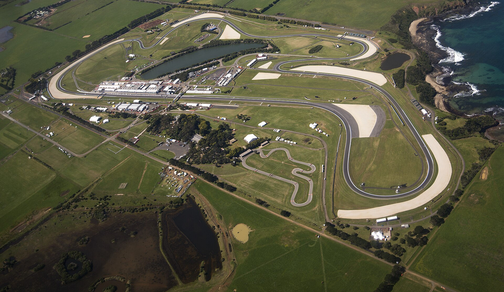

A próxima corrida da MotoGP 2026 promete reunir dois ingredientes que tornam um Grande Prêmio especialmente importante: uma disputa direta pela liderança do campeonato e a despedida de um dos circuitos mais tradicionais do motociclismo mundial.
A etapa será a 18ª das 22 previstas para a temporada e abre uma sequência decisiva de cinco Grandes Prêmios que definirão o campeão mundial. O espanhol Jorge Martín, da Aprilia Racing, chega na liderança, com apenas dois pontos de vantagem sobre Marc Márquez, da Ducati Lenovo Team. Marco Bezzecchi, também da Aprilia, permanece na disputa, embora esteja 46 pontos atrás do primeiro colocado.
O cenário esportivo ganha ainda mais relevância pelo caráter histórico da corrida. Phillip Island recebe o Mundial regularmente desde 1997, mas deixará o calendário da MotoGP após a edição de 2026. A partir de 2027, o GP da Austrália será disputado em Adelaide, encerrando uma longa associação entre a categoria e uma pista conhecida pelas curvas rápidas, paisagem oceânica e corridas imprevisíveis.
Cronograma da corrida
O GP da Austrália será disputado entre sexta-feira, 23 de outubro, e domingo, 25 de outubro de 2026. O programa inclui treinos livres, sessão de classificação, corrida Sprint e a prova principal da categoria rainha.
Por causa da diferença de 14 horas entre Phillip Island e Brasília durante o evento, várias atividades acontecerão à noite ou de madrugada para o público brasileiro.
Confira os principais horários e datas todos no fuso de Brasília:
- Quinta-feira, 22 de outubro, às 20h45 — primeiro treino livre.
- Sexta-feira, 23 de outubro, à 1h — treino oficial (Practice).
- Sexta-feira, 23 de outubro, às 20h10 — segundo treino livre.
- Sexta-feira, 23 de outubro, às 20h50 — classificação Q1.
- Sexta-feira, 23 de outubro, às 21h15 — classificação Q2.
- Sábado, 24 de outubro, à 1h — corrida Sprint.
- Domingo, 25 de outubro, à 0h — corrida principal do GP da Austrália.
A Sprint terá 13 voltas, enquanto o Grande Prêmio principal será disputado em 27 voltas, totalizando aproximadamente 120,1 quilômetros.
Disputa pelo título mundial
O grande atrativo competitivo da etapa australiana está na diferença mínima entre os dois primeiros colocados do campeonato.
Jorge Martín chega a Phillip Island na liderança após conquistar o terceiro lugar no GP da Indonésia, disputado em Mandalika. Naquela corrida, a Aprilia ocupou as quatro primeiras posições, com vitória de Marco Bezzecchi, resultado que reforçou a competitividade da fabricante italiana na reta final da temporada.
Apesar de ter apenas uma vitória em Grandes Prêmios na temporada, Martín chega à Austrália depois de três pódios consecutivos nas provas principais. A regularidade tem sido importante para sustentar sua candidatura ao título.
Marc Márquez apresenta um perfil diferente. O atual campeão mundial soma seis pódios nas corridas principais de 2026, todos conquistados com vitórias. O espanhol permanece próximo de Martín na classificação e tem a oportunidade de recuperar a liderança em uma pista onde já protagonizou disputas marcantes.
Um exemplo aconteceu em 2024, quando Márquez levou a melhor sobre Martín em um confronto direto no GP da Austrália. A lembrança daquele duelo adiciona um componente especial ao encontro de 2026, especialmente diante da proximidade entre os dois na pontuação.
Bezzecchi também merece atenção. O italiano venceu a etapa da Indonésia e recuperou terreno na disputa pelo título. Embora sua diferença para o líder seja maior, a quantidade de pontos ainda disponíveis mantém matematicamente aberta a possibilidade de uma recuperação.
Uma das pistas mais especiais da MotoGP
Localizado a aproximadamente 140 quilômetros de Melbourne, o Phillip Island Grand Prix Circuit é reconhecido como um dos traçados mais rápidos e fluidos do calendário mundial.
Diferentemente de circuitos marcados por fortes frenagens e curvas lentas, Phillip Island exige velocidade de contorno, precisão nas mudanças de direção e confiança para acelerar com a motocicleta inclinada.
As características técnicas ajudam a explicar a reputação do circuito:
- Extensão: 4,45 quilômetros.
- Número de curvas: 12.
- Curvas para a esquerda: 7.
- Curvas para a direita: 5.
- Maior reta: 900 metros.
- Largura da pista: 13 metros.
- Distância da corrida principal: 27 voltas e 120,1 quilômetros.
A localização próxima ao Oceano Austral também acrescenta dificuldades específicas. Os ventos podem interferir no comportamento aerodinâmico das motos, enquanto mudanças nas condições meteorológicas exigem adaptações rápidas de pilotos e equipes.
Em Phillip Island, a capacidade de manter velocidade nas curvas de alta é tão importante quanto a potência disponível nas retas. Isso valoriza a estabilidade da motocicleta, a escolha dos pneus e a precisão das trajetórias.
A pista também oferece oportunidades de ultrapassagem, especialmente quando um piloto consegue carregar mais velocidade na saída de uma sequência de curvas. Por esse motivo, a corrida frequentemente exige atenção até as voltas finais.
A despedida após décadas de história
A edição de 2026 terá um significado que ultrapassa a disputa pelo campeonato. Será a última visita da MotoGP a Phillip Island antes da transferência do GP da Austrália para Adelaide.
A história do circuito é muito anterior à categoria moderna. As primeiras competições automobilísticas na região aconteceram ainda na década de 1920, enquanto as corridas de motocicletas começaram em 1931. A pista permanente foi construída em 1956.
O Mundial de Motovelocidade passou por Phillip Island em 1989 e 1990. Entre 1991 e 1996, o GP da Austrália foi realizado em Eastern Creek, até retornar à ilha em 1997.
Desde então, Phillip Island se consolidou como um dos cenários mais emblemáticos do motociclismo de velocidade, recebendo gerações de pilotos e proporcionando confrontos decisivos.
A tradição australiana também está ligada a nomes como Wayne Gardner, Mick Doohan e Casey Stoner, protagonistas de diferentes períodos da história da categoria rainha.
Stoner, particularmente, construiu uma relação especial com o circuito ao conquistar seis vitórias consecutivas em Phillip Island entre 2007 e 2012.
A despedida de 2026 representa, portanto, o encerramento de uma era. A mudança para Adelaide, com estreia programada para novembro de 2027, colocará o GP da Austrália em um circuito urbano concebido para a MotoGP, oferecendo um desafio completamente diferente daquele encontrado na ilha.
Como funciona a pontuação da MotoGP e os efeitos da Sprint
Com apenas dois pontos separando Martín e Márquez, a Sprint australiana poderá alterar a liderança do campeonato antes mesmo da corrida principal.
Introduzida em 2023, a Sprint é uma corrida de distância reduzida, disputada durante o fim de semana de Grande Prêmio. Os nove primeiros colocados recebem pontos, enquanto a corrida principal distribui pontos aos 15 melhores.
A pontuação da Sprint funciona da seguinte maneira:
- Primeiro colocado — 12 pontos.
- Segundo colocado — 9 pontos.
- Terceiro colocado — 7 pontos.
- Quarto colocado — 6 pontos.
- Quinto colocado — 5 pontos.
- Sexto colocado — 4 pontos.
- Sétimo colocado — 3 pontos.
- Oitavo colocado — 2 pontos.
- Nono colocado — 1 ponto.
Na corrida principal, o vencedor recebe 25 pontos, seguido por 20 do segundo colocado e 16 do terceiro.
Assim, um piloto pode conquistar até 37 pontos durante um único fim de semana, somando Sprint e Grande Prêmio. Esse sistema torna a consistência particularmente importante na reta final do campeonato, pois resultados negativos podem comprometer vantagens construídas ao longo da temporada.
A classificação também exerce papel fundamental. Os dez pilotos mais rápidos do treino oficial avançam diretamente ao Q2, enquanto outros disputam as duas vagas restantes no Q1. O resultado define a ordem de largada tanto da Sprint quanto da prova principal.
Onde assistir ao GP da Austrália
No Brasil, a MotoGP tem transmissão pelos canais ESPN e pela plataforma Disney+. Para a programação do GP da Austrália, a cobertura está prevista na ESPN 4 e no Disney+ Premium.
O que vem depois do GP da Austrália
Após Phillip Island, a MotoGP seguirá para outros quatro Grandes Prêmios, encerrando o calendário de 2026 na Espanha.
As etapas restantes previstas após a corrida australiana são:
- GP da Malásia — 1º de novembro, em Sepang.
- GP do Catar — 8 de novembro, em Lusail.
- GP de Portugal — 22 de novembro, em Portimão.
- GP de Valência — 29 de novembro, em Cheste.
A sequência reúne circuitos de características diferentes, exigindo capacidade de adaptação em um período decisivo para o campeonato.
O calendário também representa o encerramento de um importante ciclo técnico da MotoGP. A temporada de 2026 é a última da atual geração de protótipos de 1.000 cilindradas antes da entrada do novo regulamento de 2027, que prevê motores de 850 cilindradas.
O que esperar da corrida australiana
O GP chega com ingredientes suficientes para ocupar um lugar importante na história recente da MotoGP.
A diferença de apenas dois pontos entre os líderes transforma cada posição conquistada em um elemento relevante para a classificação. Martín tenta preservar sua vantagem com a Aprilia, enquanto Márquez procura recuperar o primeiro lugar e manter viva a busca por mais um título mundial com a Ducati.
Bezzecchi surge como outro personagem importante, tanto pela recuperação apresentada nas últimas etapas quanto pelo potencial de interferir diretamente na disputa entre os favoritos.
Mas existe uma dimensão ainda maior em Phillip Island. A última corrida da MotoGP no circuito coloca pilotos e equipes diante da oportunidade de entrar para a história como vencedores da despedida de um dos palcos mais respeitados do esporte.
Entre a batalha pelo campeonato, o desafio técnico de uma das pistas mais rápidas da temporada e o encerramento de uma tradição iniciada há décadas, o GP da Austrália promete ser muito mais do que outra etapa do calendário. Será uma corrida em que o presente da disputa pelo título encontrará a história de um circuito que ajudou a definir a identidade da MotoGP.